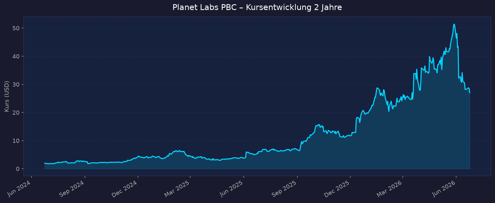
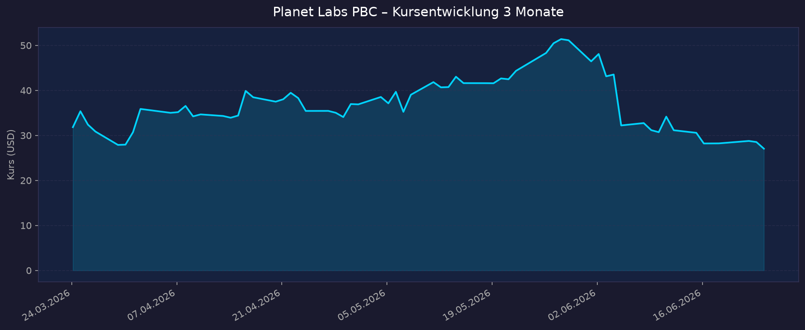

Sektor-Einordnung: Direkter Pure-Play im Weltraum-Sektor (Erdbeobachtung). Planet betreibt die weltweit größte kommerzielle Satellitenflotte (~200 aktive Satelliten der „Dove/SuperDove"-Klasse für tägliches Flächen-Scanning + hochauflösende „SkySat"- und neue „Pelican"-Satelliten) und verkauft die Bilddaten als wiederkehrende Daten-Abonnements. Geschäft ist defizitär → KGV n/a; Bewertung läuft über P/S, Umsatzwachstum, Cash-Runway, Verwässerung und Großaufträge (Defense/Regierungen). Hinweis Geschäftsjahr: Planet bilanziert mit Fiskaljahr-Ende 31. Januar. „Q1 FY2027" = Quartal bis 30.04.2026 (gemeldet am 04.06.2026).
📈 1. Kursentwicklung
Aktueller Kurs: ~27,05 USD (Schlusskurs 23.06.2026; intraday 24.06. um 28,44 USD) | Veränderung heute: ca. −1 %
Chart – 2 Jahre

Chart – 3 Monate

| Zeitraum | Kurs Start | Kurs Ende | Veränderung |
|---|---|---|---|
| 2 Jahre | ~1,98 USD | ~27,05 USD | +1.266 % |
| 3 Monate | ~31,83 USD | ~27,05 USD | −15 % |
| 52-Wochen-Hoch | — | 51,76 USD | — |
| 52-Wochen-Tief | — | 5,41 USD | — |
Einordnung: Eine der spektakulärsten Erholungsstorys des Sektors — von ~2 USD (Mitte 2024) auf ein 52-W-Hoch von 51,76 USD, getrieben durch Defense-Großaufträge (Deutschland, NATO, JSAT) und den ersten positiven Free Cashflow. Seit dem SpaceX-Börsengang am 12.06.2026 (Ticker SPCX, ~1,75 Bio. USD) ist die Aktie vom Hoch deutlich zurückgekommen (3-Monats-Sicht −15 %): Kapital rotiert teils direkt in SpaceX, und die hohe Bewertung kleinerer Pure-Plays wird neu sortiert.
🔗 Interaktiv: TradingView NYSE:PL
💹 2. KGV-Entwicklung (Kurs-Gewinn-Verhältnis)
Aktuelles KGV: n/a — defizitär
| Zeitraum | KGV | Einordnung |
|---|---|---|
| Aktuell | n/a — defizitär | Nettoverlust auf GAAP-Basis |
| vor 3 / 6 / 12 / 24 Monaten | n/a — defizitär | durchgängig Verlustzone |
Bewertung: Planet schreibt auf GAAP-Basis weiter Verluste (Q1 FY2027 GAAP-Nettoverlust −138,9 Mio. USD, stark verzerrt durch eine nicht-zahlungswirksame Warrant-Neubewertung von −106,5 Mio. USD; non-GAAP-Nettoverlust nur −8,8 Mio. USD). Ein KGV ist daher nicht aussagekräftig — die Bewertung muss über P/S, EV/Sales, Cash-Burn/Runway und Auftragsbestand erfolgen (siehe Abschnitt 3 + Bewertungs-Score). Forward-Konsens erwartet erst ab FY2028 eine deutliche Ergebnisverbesserung.
💰 3. Sales Multiple (Kurs-Umsatz-Verhältnis / P/S)
Aktuelles P/S-Verhältnis: ~29x (TTM; Marktkap. ~9,6 Mrd. USD / TTM-Umsatz ~335 Mio. USD). Je nach Quelle/Umsatzbasis 28–32x.
| Zeitraum | P/S Ratio | Einordnung |
|---|---|---|
| Aktuell | ~29x | extrem hoch vs. Branchenschnitt (~3,5x) |
| vor 3 Monaten | ~34x (Kurshoch-Phase) | Bewertungs-Peak |
| vor 12 Monaten | teils niedrig (Kurs ~2–6 USD) | vor dem Re-Rating |
| vor 24 Monaten | ~3–5x (gedrückt) | Tiefphase nach SPAC-Enttäuschung |
Trend: Stark gestiegen. Das P/S hat sich im Zuge der Kursvervielfachung von einer einstelligen „Value-Falle" auf ~29–32x ausgeweitet. Das ist deutlich über dem Erdbeobachtungs-Branchenschnitt (~3,5x), aber unter Rocket Lab (RKLB) und über BlackSky (BKSY). Die Prämie spiegelt das beschleunigte Umsatzwachstum (+42 % YoY), den hohen Anteil wiederkehrender Umsätze (~98 % ACV) und die Defense-Pipeline wider — lässt aber wenig Spielraum für Enttäuschungen.
📊 4. Handelsvolumen (Trading Volume)
| Zeitraum | Ø Tagesvolumen | Auffälligkeiten |
|---|---|---|
| 3-Monats-Durchschnitt | ~13,6 Mio. Aktien | erhöht durch Earnings + SpaceX-IPO-Phase |
| 2-Jahres-Durchschnitt | ~8,4 Mio. Aktien | strukturell gestiegenes Interesse |
| Volumen-Peak (2J) | Spitzen >40 Mio. | Earnings-Tage / Defense-Auftragsmeldungen |
Volumentrend: Deutlich steigendes Handelsinteresse. Das aktuelle 3-Monats-Volumen liegt rund 60 % über dem 2-Jahres-Schnitt — Folge der Kursrally, der Defense-Großaufträge, der Q1-FY2027-Zahlen (04.06.) und des SpaceX-Börsengangs, der den gesamten Sektor in den Fokus gerückt hat.
🏦 5. Insider Trades (letzte ~9 Monate)
| Datum | Name | Funktion | Kauf/Verkauf | Anzahl Aktien | Wert (USD) |
|---|---|---|---|---|---|
| 06.04.2026 | Robert H. Schingler | Mitgründer / Insider | Verkauf | 73.683 | ~2.584.000 |
| 02.04.2026 | Ashley F. Johnson | CFO | Verkauf | 200.000 | ~7.020.000 |
| 22.01.2026 | Vijaya Gadde | Director | Verkauf | 20.000 | ~535.000 |
| 21.01.2026 | Ashley F. Johnson | CFO | Verkauf | 150.731 | ~4.071.000 |
| 21.01.2026 | Kristen Robinson | Director | Verkauf | 47.835 | ~1.290.000 |
| 26.12.2025 | Robert H. Schingler | Mitgründer / Insider | Verkauf | 73.782 | ~1.428.000 |
| 13.10.2025 | Robert H. Schingler | Mitgründer / Insider | Verkauf | 81.656 | ~1.266.000 |
3-Monats-Überblick: Klar Netto-Verkäufe — CFO und Mitgründer haben im Q1/Q2 2026 mehrfach große Pakete verkauft. 12-Monats-Überblick: Insider haben netto rund 11–29 Mio. USD mehr verkauft als gekauft (Quellen variieren). Das ist nach einer Kursvervielfachung typisch (Realisierung von Buchgewinnen, oft über vorab festgelegte 10b5-1-Pläne), dämpft aber das Vertrauenssignal — es gab praktisch keine nennenswerten Insider-Käufe.
Quelle: MarketBeat / SEC Form 4 / OpenInsider
🩳 6. Short-Positionen
Aktuelle Short Quote: ~9–12 % des Streubesitzes (Float) — ~32–34 Mio. Aktien leerverkauft.
| Zeitraum | Short Interest | Veränderung |
|---|---|---|
| Aktuell | ~9,0 % (outstanding) / ~11,6 % (Float) | erhöht |
| vor 3 Monaten | ~9–10 % | leicht steigend |
| vor 12 Monaten | nicht eindeutig verfügbar | — |
Einschätzung: Erhöht. Eine zweistellige Short-Quote signalisiert eine spürbare Skeptiker-Fraktion, die die ~29x-P/S-Bewertung und die anhaltenden GAAP-Verluste für überzogen hält. Bei positiven Überraschungen (z. B. weitere Defense-Aufträge) besteht Short-Squeeze-Potenzial; umgekehrt verstärkt die Short-Last Rücksetzer.
🗞️ 7. Aktuelle Nachrichten
| Datum | Quelle | Nachricht | Relevanz |
|---|---|---|---|
| 04.06.2026 | Businesswire / SEC | Q1 FY2027: Rekordumsatz 94,2 Mio. USD (+42 % YoY), erster „Beat", Backlog >906 Mio. USD | Hoch |
| Anf. Juni 2026 | Craig-Hallum / Northland / Needham / Clear Street | Kursziele angehoben auf 49–53 USD (Buy/Outperform) nach Zahlen | Hoch |
| 12.06.2026 | StockTitan / Yahoo | SpaceX-Börsengang (SPCX) rückt Pure-Play-Space-Datenwerte in den Fokus — Neubewertung des Sektors | Hoch |
| 05.06.2026 | SEC | Automatic Shelf Registration wirksam — ermöglicht Ausgabe weiterer Class-A-Aktien (Verwässerungsrisiko) | Hoch |
| Mai 2026 | Company | 9 KI-fähige „Pelican"-Hochauflösungs-Satelliten on-orbit nach mehreren SpaceX-Starts | Mittel |
| Q1 FY2027 | Company | +22 Mio. USD NGA-Option + zusätzlicher Krisenreaktions-Auftrag; Defense&Intelligence-Umsatz +65 % YoY | Hoch |
| 2025 | SpaceNews / Investing | €240 Mio. (~283 Mio. USD) Mehrjahresvertrag mit der deutschen Bundesregierung (Erlöse ab Jan. 2026) | Hoch |
| 12.06.2025 | Businesswire | NATO wählt Planet für Mehrjahres-Vertrag (tägliches Monitoring / Frühwarnung) | Hoch |
| Jan. 2025 | SpaceNews | 230 Mio. USD / 7 Jahre mit SKY Perfect JSAT (Japan, Pelican-Satelliten) | Mittel |
Sentiment: Überwiegend positiv — Rekordzahlen, breite Analysten-Anhebungen und eine volle Defense-Pipeline. Dämpfer: Shelf Registration (Verwässerung), anhaltende GAAP-Verluste und Bewertungssorgen nach der Rally.
📋 8. Letzte 3 Quartalsberichte
Q1 FY2027 (Quartal bis 30.04.2026, gemeldet 04.06.2026)
| Kennzahl | Ist | Erwartung | Abweichung |
|---|---|---|---|
| Umsatz (Revenue) | 94,2 Mio. USD (+42 % YoY) | ~88–90 Mio. USD | Beat |
| EPS (GAAP) | −0,40 USD | — | belastet durch −106,5 Mio. Warrant-Neubewertung |
| Nettomarge (GAAP) | −147,5 % | — | non-GAAP-Nettoverlust nur −8,8 Mio. USD |
| Free Cashflow | ~−1,9 bis −2,5 Mio. USD | — | nach Vorquartal positiv |
Guidance: Q2 FY2027 Umsatz 102–107 Mio. USD (~+42 % YoY Mid); Gesamtjahr FY2027 425–441 Mio. USD (~+41 %). RPO +81 % YoY auf 816 Mio. USD, Backlog +72 % auf >906 Mio. USD, Cash +223 % YoY auf 731 Mio. USD. Kursreaktion: positiv — Auslöser für die Analysten-Zielanhebungen auf 49–53 USD.
Q4 FY2026 (Quartal bis 31.01.2026)
| Kennzahl | Ist | Erwartung | Abweichung |
|---|---|---|---|
| Umsatz (Revenue) | 86,8 Mio. USD (+41 % YoY) | ~im Rahmen | in-line/leicht besser |
| EPS (GAAP) | −0,48 USD | — | hoher GAAP-Verlust |
| Nettomarge (GAAP) | −175,6 % | — | Sondereffekte |
| Free Cashflow | ~−1,0 Mio. USD | — | nahe Break-even |
Guidance: Beschleunigung des Wachstums, getragen von Defense/Government und den anlaufenden deutschen + JSAT-Verträgen. Kursreaktion: überwiegend positiv im Trend der Wachstumsbeschleunigung.
Q3 FY2026 (Quartal bis 31.10.2025)
| Kennzahl | Ist | Erwartung | Abweichung |
|---|---|---|---|
| Umsatz (Revenue) | 81,3 Mio. USD (+33 % YoY) | ~im Rahmen | in-line |
| EPS (GAAP) | −0,19 USD | — | Verlust verringert |
| Nettomarge (GAAP) | −72,8 % | — | Verbesserung ggü. Vorquartalen |
| Free Cashflow | +1,9 Mio. USD | — | positiv |
Guidance: Backlog ~900 Mio. USD, RPO ~672 Mio. USD; steigender Anteil wiederkehrender Umsätze (~98 % ACV). Kursreaktion: positiv — Bestätigung der Wachstums- und Cashflow-Wende.
Wachstumsbild der letzten 5 Quartale: Q1 FY26 66,3 → Q2 73,4 → Q3 81,3 → Q4 86,8 → Q1 FY27 94,2 Mio. USD. YoY-Wachstum beschleunigt von ~10 % auf +42 % — der zentrale Bull-Punkt.
🌍 9. Marktkontext & Wettbewerb
Markt / Branche: Satellitengestützte Erdbeobachtung (Earth Observation, EO). Marktgröße je nach Abgrenzung sehr unterschiedlich: enger EO-Satellitenmarkt ~7–8 Mrd. USD (2026), breiter gefasste EO-/Geospatial-Daten-Märkte 16–17 Mrd. USD; CAGR ~8–9 % bis Mitte der 2030er. Treiber 2026: Verteidigung & nationale Sicherheit (Aufrüstung Europas, NATO, Indo-Pazifik), KI-gestützte Bildanalyse, kommerzielle Verticals (Agrar, Versicherung, Supply-Chain, Finanzen).
| Wettbewerber | Stärke | Schwäche |
|---|---|---|
| Maxar / Airbus D&S | Höchste Auflösung, jahrzehntelange Archive, etablierte Regierungskunden | Teurer, weniger „daily-scan"-Kadenz; Maxar privat (KKR) |
| BlackSky (BKSY) | Schnelle Tasking-Kadenz, Defense-fokussiert, günstigere Bewertung | Kleiner, weniger Flächenabdeckung |
| ICEYE / Capella | SAR (Radar, wolkendurchdringend) — Differenzierung | Kein optisches Daily-Scan; Nischen |
| Satellogic / Spire | Günstige Konstellationen / Daten-Nische | Skalierungs- und Finanzierungsfragen |
| SpaceX (Starshield) | Massive Startkapazität, Regierungsnähe, Kapital | Konkurrenz UND Launch-Partner für Planet zugleich |
Branchentrends: (1) Defense-Boom — europäische und asiatische Regierungen kaufen kommerzielle EO-Daten in Mehrjahresverträgen; Planet ist mit Deutschland (€240–280 Mio.), NATO und JSAT (230 Mio. USD) prominent positioniert. (2) KI/Analytics — Wertschöpfung verschiebt sich von Rohbildern zu fertigen Insights (Planet AI-Produkte). (3) SpaceX-IPO als Sektor-Katalysator und Bewertungsanker.
Marktposition: Planet ist beim täglichen Flächen-Scanning der globale Volumen-Marktführer (größte Flotte, einzigartiger Zeitreihen-Datensatz). Bei höchster Auflösung schließt es mit „Pelican" zu Maxar/Airbus auf. Hoher Anteil wiederkehrender Abo-Umsätze (~98 % ACV) ist ein struktureller Vorteil gegenüber projektbasierten Wettbewerbern.
Risiken aus dem Marktumfeld: Bewertungsprämie (~29x P/S) anfällig bei Wachstumsdämpfern; Abhängigkeit von Regierungsbudgets/Geopolitik; Launch-Risiken (Abhängigkeit von SpaceX als Konkurrent+Dienstleister); Verwässerung über die neue Shelf Registration; intensiver Wettbewerb durch finanzstarke und private Akteure.
🧮 Bewertungs-Score
| Kriterium | Score (1–10) | Begründung |
|---|---|---|
| Bewertung | 3,5 | P/S ~29x ist 8x über Branchenschnitt; KGV n/a (defizitär). EV/Sales hoch, aber 731 Mio. USD Cash dämpfen das EV. Wenig Sicherheitsmarge. |
| Wachstum & Momentum | 8,5 | Umsatz +42 % YoY und beschleunigend; Backlog +72 %, RPO +81 %; starkes Kurs- und News-Momentum, breite Analysten-Anhebungen. |
| Bilanz & Sicherheit | 6,5 | 731 Mio. USD Cash vs. 488 Mio. Schulden; Cash-Burn fast gestoppt (FCF nahe Break-even) → langer Runway. Aber: neue Shelf Registration = Verwässerungsrisiko. |
| Qualität & Wettbewerbsposition | 7,5 | Volumen-Marktführer im Daily-Scan, ~98 % wiederkehrende Umsätze, einzigartiges Datenarchiv, starke Defense-Pipeline. Noch nicht profitabel (GAAP). |
| Chancen vs. Risiken | 6,0 | Katalysatoren (Defense, KI, SpaceX-Hype) stark, aber Bewertung, Verwässerung, Insider-Verkäufe und ~10 % Short-Quote bremsen. |
Gewichteter Gesamtscore: 6,3 / 10 (Gewichtung: Bewertung 20 %, Wachstum 25 %, Bilanz 20 %, Qualität 20 %, Chancen/Risiken 15 %)
5-Jahres-Szenario
Basis: Kurs heute ~27 USD; FY2027-Umsatz ~433 Mio. USD (Mid). Keine Dividende. Annahmen auf Umsatzwachstum + P/S-Multiple-Entwicklung gestützt; Verwässerung berücksichtigt.
| Szenario | Annahmen | Kurs 2031 | Gesamtrendite ggü. heute |
|---|---|---|---|
| Bär | Wachstum verlangsamt auf <15 %, Defense-Aufträge flachen ab, P/S komprimiert auf ~6x, spürbare Verwässerung | ~12–15 USD | −45 bis −55 % |
| Base | ~25–30 % CAGR Umsatz, FCF nachhaltig positiv, P/S normalisiert auf ~10–12x | ~40–50 USD | +50 bis +85 % |
| Bull | ~35 %+ CAGR, GAAP-Profitabilität erreicht, weitere Defense-/Regierungs-Großaufträge, P/S bleibt premium (~15x) | ~80–100 USD | +200 bis +270 % |
Hinweis: Bei defizitären Pure-Plays mit hohem Multiple ist die Spannweite naturgemäß sehr breit — der Multiple-Pfad dominiert die Rendite stärker als das operative Wachstum.
📝 Gesamteinschätzung
Stärken:
- Globaler Volumen-Marktführer in der täglichen Erdbeobachtung mit einzigartigem Zeitreihen-Datenarchiv und ~200-Satelliten-Flotte.
- Umsatzwachstum +42 % YoY und beschleunigend, ~98 % wiederkehrende Abo-Umsätze, Backlog >906 Mio. USD (+72 %).
- Starke Defense-/Regierungs-Pipeline: Deutschland (€240–280 Mio.), NATO, SKY Perfect JSAT (230 Mio. USD), NGA-Optionen.
- Solide Liquidität (731 Mio. USD Cash, +223 % YoY), Cash-Burn fast gestoppt — langer Runway.
Risiken:
- Bewertungsprämie: P/S ~29x (≈8x Branchenschnitt) bei weiter GAAP-Verlusten (KGV n/a) — wenig Sicherheitsmarge.
- Verwässerung über neue automatische Shelf Registration (Juni 2026) + aktienbasierte Vergütung.
- Insider-Netto-Verkäufe (CFO, Mitgründer) und erhöhte Short-Quote (~10 %).
- Abhängigkeit von Regierungsbudgets/Geopolitik und von SpaceX (Konkurrent zugleich Startdienstleister); Sektor-Volatilität nach dem SpaceX-IPO.
Fazit: Planet Labs ist der prototypische direkte Weltraum-Pure-Play: hochattraktives, beschleunigendes Wachstum und eine starke Defense-Story, aber noch defizitär und ambitioniert bewertet. Die Investmentthese steht und fällt mit dem Halten des Wachstumstempos und dem Übergang zu nachhaltiger Profitabilität — bei gleichzeitig diszipliniertem Umgang mit Verwässerung. Für wachstumsorientierte, risikobereite Anleger eine interessante Sektor-Position; für konservative Profile ist die Bewertung ohne Gewinnbasis ein klares Caveat. Bewertungs-Score 6,3/10.
Datenquellen: Yahoo Finance · stockanalysis.com · Businesswire/SEC EDGAR (8-K Q1 FY2027) · SpaceNews · Investing.com · MarketBeat · Finviz/Fintel · Zacks/Yahoo Finance · Fortune Business Insights / Mordor Intelligence (Marktgröße) · Craig-Hallum/Northland/Needham/Clear Street (Kursziele) Keine Anlageberatung — rein informative Auswertung öffentlicher Daten.